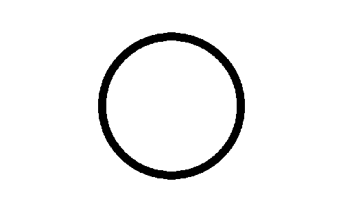
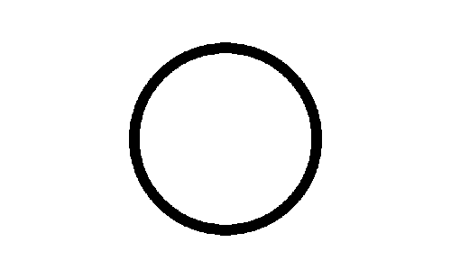

A death clock based on a 70-⊕-year lifespan. View here.
You only live once, but if you do it right, once is enough.
— Mae West
ES2 5X1 1.9 D1.8 V0.1
A death clock based on a 70-⊕-year lifespan. View here.
You only live once, but if you do it right, once is enough.
— Mae West